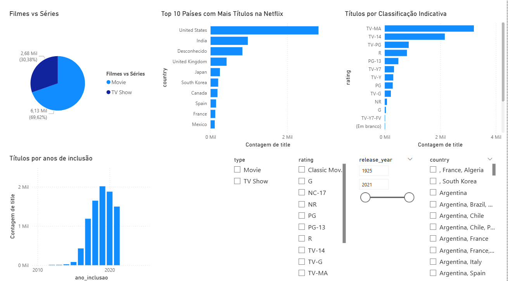

DOWNLOAD DO ARQUIVO
Você pode baixar o dashboard em formato PBIX para explorar diretamente no Power BI Desktop.
BAIXAR
VISÃO GERAL DO DASHBOARD

Análise de Dados
- Distribuição de Conteúdo: Filmes representam 69,6% dos títulos, enquanto séries correspondem a 30,4%.
- País de Origem: Os Estados Unidos lideram com folga como origem da maioria dos títulos.
- Sazonalidade: Houve um crescimento acentuado na inclusão de títulos entre 2016 e 2020, seguido de uma leve queda.
- Classificação Indicativa: A maior parte dos títulos é voltada ao público adulto, com destaque para a classificação TV-MA.
- Funcionalidades: O dashboard permite filtragem por tipo, país, classificação indicativa e período de lançamento.